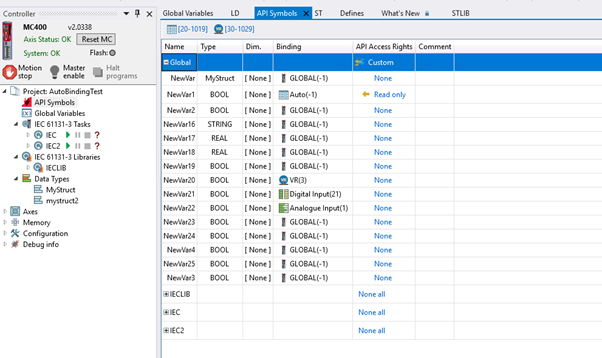

By default, this option is turned off.
When a user change API Access, they are prompted to turn on API Symbols (if not already enabled).
This option allows the variable to be accessed via an API. It adds additional information to the GLOBAL_DATA file, indicating whether the variable is visible to the API and what level of access is granted.
When API Access is enabled, an additional tool called ( )API Symbols becomes visible in the controller tree.
Information is added for task variables with API Access in the GLOBAL_DATA file.

Auto bindings are automatically applied if a variable has no binding defined or is set to Global binding (see variable NewVar1).
To use the information from GLOBAL_DATA, download the GLOBAL_DATA.xml file from the controller using the external API and parse its contents. Each variable in the file contains the necessary details for API access.
This functionality is compatible with the Trio Unified
API.